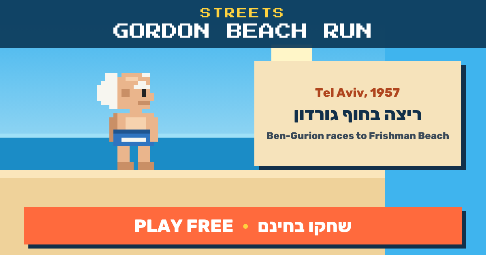

Gordon Beach → Frishman Beach · Tel Aviv · 1957
Gordon Beach Run
Israel's first prime minister has ditched his morning meetings and is sprinting down the shore to his famous headstand. Dodge crabs, seagulls and jellyfish, and collect hummus.
Play free